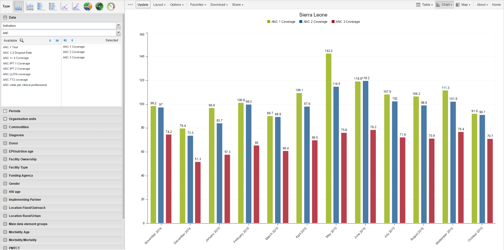

|  |
With the Data Visualizer app, you can select content, for example indicators, data elements, periods and organisation units, for an analysis. The app works well over poor Internet connections and generates charts in the web browser.
You can hide and show individual data series in the chart by clicking directly on the series label in the chart. They appear either at the top or to the right of the chart.
You can click on the triple left-arrow button on the top centre menu. This collapses the left side menu and gives more space for the chart. You can get the menu back by clicking on the same button again.